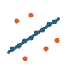
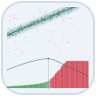
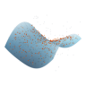
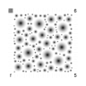

VisualGeometryToolkitCore.jl
The types and algorithms of multiple-view geometry: coordinate frames, camera and lens models, geometric primitives, projective transforms and minimal solvers, with physical units throughout, and the contracts the toolkit's robust estimators implement.
pkg> add VisualGeometryToolkitCore · General
docscode
VisualGeometryToolkitIO.jl
File formats for the stack: cameras, poses, rigs, trajectories and target measurements as self-describing JSON files that declare their conventions (pixel frame, length unit, rotation encoding, pose direction), plus COLMAP models and databases.
pkg> add VisualGeometryToolkitIO · General
docscode
VisualGeometryToolkitFeatures.jl
Feature detection, description and matching: ASIFT detection and nearest-neighbour descriptor matching in one KernelAbstractions implementation for the CPU and every GPU backend.
pkg> add VisualGeometryToolkitFeatures · General
docscode

VisualGeometryToolkitEstimation.jl
Robust estimation for geometric vision: one generic RANSAC loop and the problems for lines, homographies, fundamental and essential matrices, absolute pose, radial cameras, relative-pose bundle refinement, and hand-eye and robot-world calibration.
pkg> add VisualGeometryToolkitEstimation · General
docscode
VisualGeometryToolkitEval.jl
The evaluation package: pose-error statistics with bootstrap intervals, cross-validated hyperparameter tuning configured in TOML, an evaluator that composes a RANSAC scorer with a local optimizer, pool and dataset readers, and a framework for reproducible experiments.
pkg> add VisualGeometryToolkitEval · General
docscode
PoseLib.jl
Julia bindings to PoseLib, the C++ library of minimal solvers and robust refiners for camera pose estimation by Viktor Larsson and contributors.
pkg> add PoseLib · General
docscode

RANSACScoringDoneRight.jl
The scale-free marginal score for RANSAC: the best inlier partition with the inlier scale integrated out, so no inlier threshold is set, plus baseline scorers and CPU and GPU pool evaluators.
pkg> add RANSACScoringDoneRight · General
docscode

LocalOptimizationDoneRight.jl
The paper's robust local optimizers, ready to compose into any RANSAC of the stack, for essential matrix, fundamental matrix and homography estimation.
pkg> add LocalOptimizationDoneRight · General
docscode

BlobBoards.jl
A fiducial marker system: printable boards covered in a dense, multi-scale field of Gaussian blobs, found, identified and posed from hundreds of blob correspondences on the CPU or a GPU.
pkg> add BlobBoards · General
docscode
PanoramaStitching.jl
The panorama of a camera that only rotated, through a calibrated lens of any field of view (fisheyes past 90° included): frame rotations by RANSAC on bearings, robust rotation averaging and a rotation bundle.
pkg> add PanoramaStitching · General
docscode